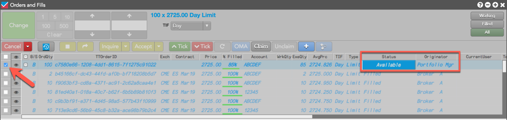
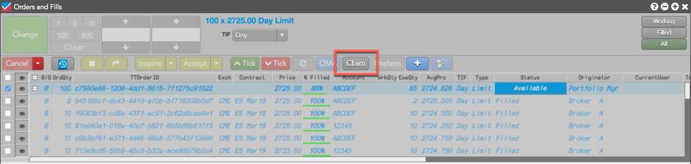
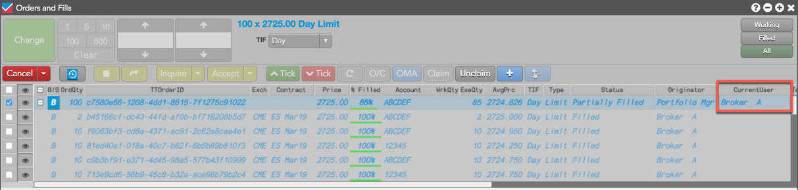
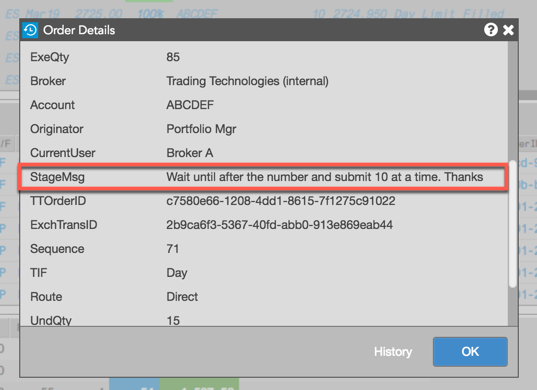
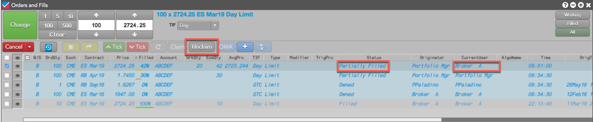
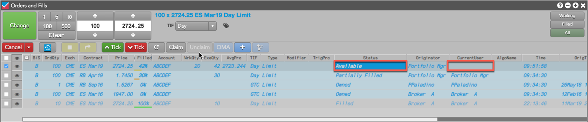

Users with order permissions to manage care orders can claim a care order using their Order Book. After claiming the order, the user is considered the "owner" of the care order in the TT system.
After a care order has been claimed, the owner or originator can unclaim the care order to make it available again.
Note: Ensure that the Order Book toolbar buttons Claim and Unclaim are shown. To show/hide these buttons, right-click the toolbar, select Settings, and click Order Toolbar Buttons. Scroll through the list that appears, check Claim and Unclaim, and click Ok.
To claim a care order:
Click the care order row to select it.
Note: Care orders are displayed with a status of Available in the Status column. Make sure you are showing this column in the Order Book settings.
Tip: In the Order Book and Orders and Fills widgets, the Available status is displayed as an actionable button in the Status column, allowing you to claim the order with a single click.
The order row checkbox is checked after selecting the care order.

Click the Claim button in the toolbar.

When you claim the order, your alias appears in the CurrentUser column, indicating you are the owner of the care order.

The Unclaim button is active and the Claim button is now grayed out. The Buy or Sell direction cell in the B/S column becomes an actionable button, and the owner can now click B (Buy) or S (Sell) to enter a child order.Optionally, you can click the order details button in the toolbar to open the Order Details screen and view any special order instructions in the StageMsg field.

Tip: You can also view the care order message in the StageMsg column in the Order Book.
If you own a care order with a Status of Owned, Working, or Partially Filled, you can relinquish ownership of the order using the Unclaim button on the toolbar.
Tip: If you are an administrator in the TT system and submit a care order, you have the ability to force the claimed care order back into an "available" state by using the Unclaim button.
To unclaim a care order:

When you unclaim the order, the Status of the order is "Available" and the CurrentUser column is blank until another user claims the care order. The Claim button is active and the Unclaim button is now grayed out. The "Available" status also becomes an actionable button in the Status column.
